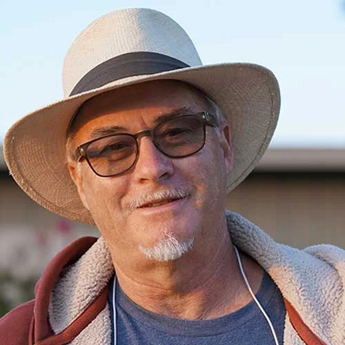

ACAmos Clifford is the founder of the Association of Nature and Forest Therapy Guides and Programs and author of the best selling Your Guide to Forest Bathing (Conari Press 2018). After studying Buddhist philosophy for over 20 years, in 2004 Amos founded Sky Creek Dharma Center in Chico, California, where he emphasized the importance of meditation practice in wild places. By 2008 he no longer identified as Buddhist, instead preferring the nameless and sometimes unnamable experiences he had in natural settings, and had been having since early childhood. This led to a deepening inquiry regarding relationships between humans and the more-than-human world. Between 2010 and 2012 Amos took his inquiry into wild places, and with the help of School of Lost Borders and Men of Spirit he had a year of intense wilderness practice, which led to the vision for the Association of Nature and Forest Therapy Guides and Programs. Inspired by the Japanese practice of Shinrin-yoku, Amos founded ANFT in 2012 and over the next two years developed what is now known as the "Standard Sequence" of the ANFT school of Forest Therapy. Amos holds a BS in Organization Development and an MA in Counseling from the University of San Francisco. He teaches about Forest Therapy and leads retreats internationally